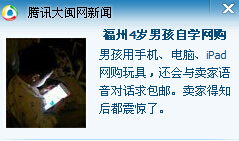

Conversation with 81184027 at Tue 12 Aug 2014 03:52:16 PM CST on 154115835 (webqq)
(08/12/2014 01:41:07 PM) 福建-福州&水浒: 一到中国语言不通，嫁到农村反差太大，就跑路了
(08/12/2014 01:16:07 PM) Loki : (#194676)以后会有多少光棍呀。。。
(08/12/2014 01:17:52 PM) 此去经年: (#194677)国家实施一些鼓励生育女孩的制度措施，积极提高女性的社会地位
(08/12/2014 01:25:35 PM) Loki : (#194678)本国对国民福利有哪些？
(08/12/2014 01:27:01 PM) 仁太: (#194679)我擦
(08/12/2014 01:27:05 PM) 仁太: (#194680)不带这样的
(08/12/2014 01:27:11 PM) 仁太: (#194681)我要求
(08/12/2014 01:27:22 PM) 仁太: (#194682)男同胞们地狱事新联
(08/12/2014 01:27:24 PM) 仁太: (#194683)并且
(08/12/2014 01:27:38 PM) 仁太: (#194684)更加更加更加更加更加更加珍贵
(08/12/2014 01:39:07 PM) 福建-福州&水浒: (#194686):face13:
(08/12/2014 01:39:31 PM) 蛋包飯: (#194687)穷人娶越南女，居然会跑路
(08/12/2014 01:39:58 PM) 福建-福州&水浒: (#194688)正常
(08/12/2014 01:40:33 PM) 福建-福州&水浒: (#194689)因为越南媒介人描绘的中国人很富有
(08/12/2014 01:42:09 PM) 福建-福州&水浒: 休息下
(08/12/2014 02:22:28 PM) 醒悟: :face13:陈安之成功学你们觉得如何
(08/12/2014 02:24:11 PM) 此去经年: 坑爹的直销代言人
(08/12/2014 02:24:17 PM) 此去经年: 骗子，是骗子！
(08/12/2014 02:30:47 PM) 蛋包飯: 直销、传销都是骗子
(08/12/2014 01:34:28 PM) 蛋包飯: (#194685)
(03:59:59 PM) 小绵羊: :中国是物质型社会，逐渐转向(追求)精神型社会!
(04:00:29 PM) 小绵羊: 速度是很幔的!
(04:02:05 PM) 蛋包飯: 嗯。是物质社会，于是传销、直销、拜金女、干爹、干女儿层出不穷。
(04:03:37 PM) 此去经年: :)
(04:05:35 PM) 醒悟: :D拜金通病谁都想过好些有面子些
(04:06:55 PM) 小绵羊: 在中国，一个没车没房，没钱没女人的男人，是没有几个人会认为他很"富有"的，至少他物质不富有!(精神富有的人在中国被称为"傻子"和"疯子"!)，捐钱给穷人或助人为乐，见义勇为者均被冠以"傻"的称呼，
(04:08:10 PM) 小绵羊: 尽管报章，媒体均报导并称赞为"正能量"!
(04:09:23 PM) 醒悟: 正常你给别人，别人给你吗?
(04:10:16 PM) 醒悟: 你当好人钱用光了，有好人来帮你吗?
(04:11:05 PM) 山东-青岛&昆吾: 安拉阿胡阿克巴！
(04:12:16 PM) 山东-青岛&昆吾:
(04:13:54 PM) Loki :
(04:14:23 PM) 小绵羊: 真正的助人为乐，见义勇为者的心态是:1.我认为是做好事，能帮人，会得好报(上天堂)!2.我想做，但家人，亲人可能会说我傻!3.有钱人用以长名气，用慈善助人去为自己出名铺路，4，贪腐者于心不忍回报一点!
(04:14:45 PM) 蛋包飯: 
(04:15:25 PM) Loki : 真正的助人为乐，见义勇为者的心态是:1.我认为是做好事，能帮人，会得好报(上天堂)!2.我想做，但家人，亲人可能会说我傻!3.有钱人用以长名气，用慈善助人去为自己出名铺路，4，贪腐者于心不忍回报一点! -----还有一种就是看不惯。
(04:17:03 PM) 小绵羊: 其实:真正的帮助是不需要回报，报答的，也不需要媒体，报章的报导!
(04:18:02 PM) Loki : 随心所欲而不逾矩。
(04:22:39 PM) 小绵羊: 中国的社会已不是社会:一个老人跌倒，会有千万种可能，可能有诈，可能骗钱，可能自杀，可能对政府不满……，最后是真的不小心或身体问题才跌到的。但跌倒后才谈到扶与不扶的问题的!
(04:23:07 PM) Loki : 中国的社会已不是社会:一个老人跌倒，会有千万种可能，可能有诈，可能骗钱，可能自杀，可能对政府不满……，最后是真的不小心或身体问题才跌到的。但跌倒后才谈到扶与不扶的问题的! ----没那么复杂，一切是你想多了。
(04:23:14 PM) Loki : 碰到老人跌倒
(04:23:18 PM) Loki : 当然去扶一把。
(04:23:34 PM) Loki : 这个真心是伸手而已。
(04:23:43 PM) Loki : 不要给自己的冷漠找借口。
(04:24:12 PM) 蛋包飯: 扶一把，怕怕。。。中国人似乎不与陌生人打招呼，这在海外罕见的。
(04:24:32 PM) 小绵羊: 我看新闻看多了，实际生活也遇到过!
(04:25:06 PM) 蛋包飯: 西方国家陌生人也会互相问候。中国人彼此戒备的心理很强，陌生人不会彼此问候
(04:25:35 PM) Loki : @蛋包飯 东方很多国度也是的。
(04:25:46 PM) 山东-青岛&昆吾: @蛋包飯 我敢扶:D
(04:25:48 PM) 小绵羊: 怕怕!太对了，古话叫"多—事不如少—事"!
(04:25:48 PM) Loki : 我怎么没遇到过？
(04:26:06 PM) Loki : 这些都是给自己的冷漠找一点高尚点的借口。
(04:26:09 PM) 上善若水: 你敢扶，那说明你很有钱哦
(04:26:17 PM) Loki : 世人不是瞎子。
(04:26:19 PM) 蛋包飯: 哦，台湾人有点不太一样
(04:26:40 PM) 山东-青岛&昆吾: 敢讹我他家就等着住帐篷行了@上善若水 X-)
(04:26:41 PM) 蛋包飯: 我在台湾企业打工的时候，台湾人有跟我问候过。
(04:26:49 PM) Loki : 我不相信所有人都是那种靠着骗取别人善心来活着的。
(04:28:01 PM) 小绵羊: 但事实上是有这种"人(人渣，垃圾)"存在!
(04:28:12 PM) 蛋包飯: 台湾人应该没经历过饥荒的历史。所以问候语不是“吃过了没有”而是“早”或“晚安”
(04:29:08 PM) 蛋包飯: 在内地，最常见的问候语就是：“吃过了没有”
(04:29:13 PM) Loki : @小绵羊 太极端，坚持自己本心，要不就不要打着善意，要不就去做善意，但是不要不做善事确给自己找借口，否则，我个人观点是看不起你。
(04:30:06 PM) 憧憬￠未来: 七了某
(04:30:11 PM) 憧憬￠未来: :dig:.
(04:30:31 PM) 蛋包飯: “吃过了没有”在老外看来是很奇怪的问候方式
(04:30:41 PM) Loki : 本身就很奇怪。
(04:30:49 PM) 此去经年: 嗯，饱了.
(04:30:53 PM) Loki : 上次去一个不算熟悉的朋友家。
(04:30:57 PM) Loki : 他问我吃过了没
(04:31:01 PM) Loki : 我说没有。。
(04:31:06 PM) 此去经年: 你要请我吃吗？
(04:31:07 PM) Loki : 我以为他会请我吃饭呢。
(04:31:10 PM) 蛋包飯: 台湾人会很不习惯这种问候方式
(04:31:13 PM) Loki : 结果他不讲话了。
(04:31:20 PM) Loki : 不是不讲话
(04:31:20 PM) 蛋包飯: 其实这只是问候语，并非要请你吃饭:D
(04:31:26 PM) Loki : 是扯开这个话题了。
(04:32:36 PM) Loki : 是的，正常思维都是如此，这个问候确实蛮奇怪。
(04:33:04 PM) 蛋包飯: 这是中国特色问候语。其他国家和种族没有这个现象。;-)
(04:33:54 PM) Loki : 中国是文明的国度
(04:34:00 PM) Loki : 但是现在不文明事件太多了。
(04:34:29 PM) 蛋包飯: 可是文明国度经历了不少饥荒战乱。于是见面问候就是：吃了没有
(04:35:15 PM) 蛋包飯: 中国文化其实是吃的文化，混的好叫“吃香”，赚大钱叫“吃死掉”。。。
(04:36:01 PM) 上善若水: :D
(04:36:09 PM) Loki : 嗯，个人感觉
(04:37:16 PM) Loki : 遇到需要帮助的，而你不损失自身任何利益就可以随意帮助的人，去帮助对方，那么我们国度的口碑会变得很好。
(04:38:51 PM) 蛋包飯: 中国文化其实是吃的文化，混的好叫“吃香”，赚大钱叫“吃死掉”。。。泡妞叫“有的吃了”，晚上打炮叫“吃掉她”。。。:D
(04:45:59 PM) 福建-福州&水浒: :D:D:D:D
(04:46:10 PM) 福建-福州&水浒: 吃了吗？
(04:48:20 PM) 此去经年:
(04:48:21 PM) 蛋包飯: :D中国特色问候语:D
(05:15:58 PM) 蛋包飯: :face64::face64::face64:下班回去吃晚餐
(05:18:03 PM) 仁太: 额
(05:18:26 PM) 仁太: 我要一直萌萌哒你们谁都别想让我吃药
(05:18:40 PM) 仁太: 我们是国民主义接班人
(05:22:05 PM) 此去经年:
(05:28:45 PM) 山东-青岛&昆吾: @仁太 开门，顺丰快递！
(06:11:13 PM) 小绵羊: 吃菜，她是我的菜!
(06:11:25 PM) 小绵羊: 这也是?
(06:11:32 PM) 仁太: ......
(06:13:06 PM) 小绵羊: 太文明啦!还是Make lOVe好听，文雅!